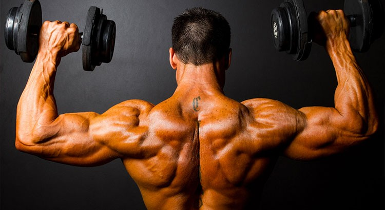

Bienvenue !
Ce site a pour but d'offrir aux pratiquants de musculation un large choix détaillé d'exercices en fonction de leurs besoins et de leurs objectifs. Que ce soit débutant, intermédiaire ou expérimenté, cette encyclopédie d'exercices vous permettra de remplir vos objectifs et différencier vos séances vous aidant à progresser en musculation.

Débutant en musculation ?
La section Conseil est faites pour vous ! Méthode, programme, conseils... Tout ce qu'il faut pour commencer la musculation sur de bonnes bases ! N'oubliez pas de faire un tour par la section Vocabulaire pour comprendre certain termes spécifiques !
Habitué en musculation ?
La section Conseil est doté d'une catégorie pour vous ! Plusieurs techniques d'entraînements différentes complexes y sont expliqués pour vous permettre de diversifier vos entraînements et de progresser d'avantage !